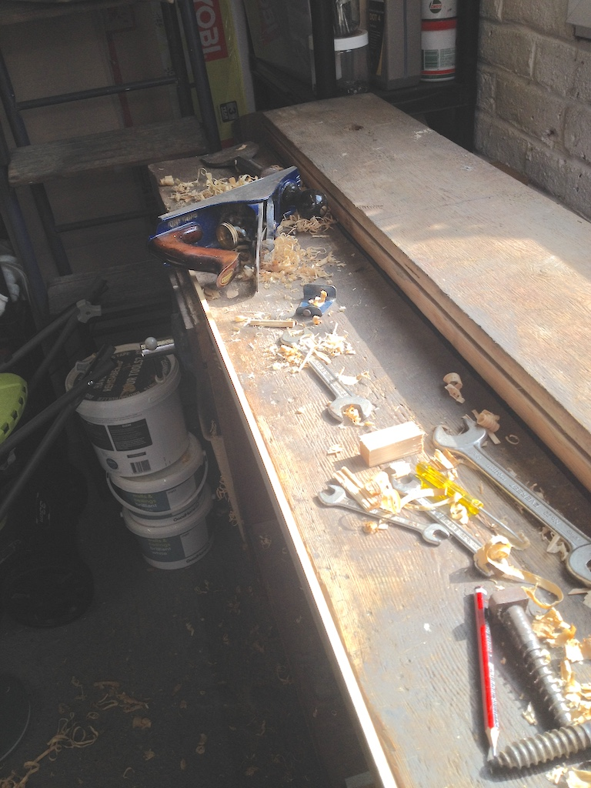
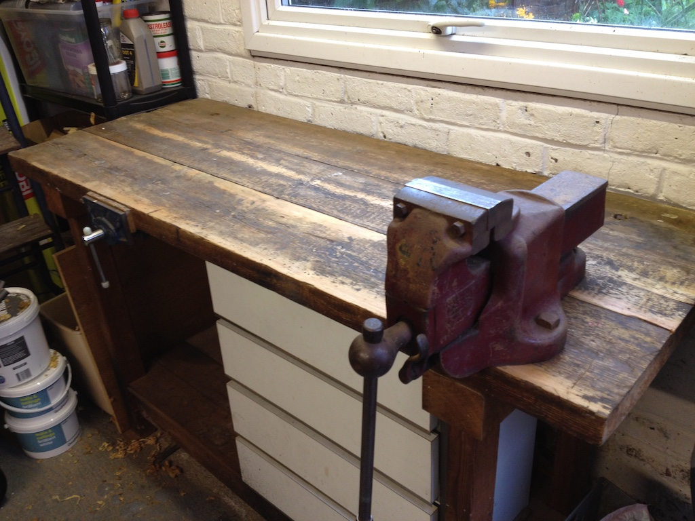

In this photo you can see a slot running along the edge of one of the planks. There is a similar slot on the edge of the plank next to it and a strip of wood fits into both slots. The strip is in the vice so that I could make it thinner by shaving off some wood. I did that with a plane; not as in aeroplane, but a tool for shaving thin slivers off wood. You can see the plane laying on its side near the top of the photo and there are some shavings on the front plank of the bench top. So I was using the front of the bench while I had other parts in pieces. I also had to shave some wood off the edges of the planks so that they would fit closer together.
Eventually I got it all back together, cleaned the top a little and screwed back the heavy vice. The gaps between the planks are now much smaller and the workbench is ready for me to start work on my car.